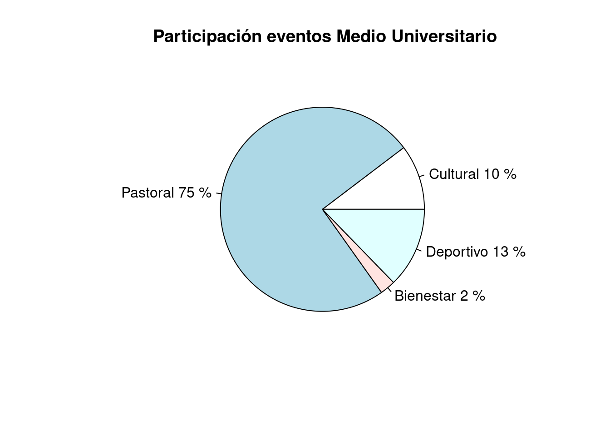
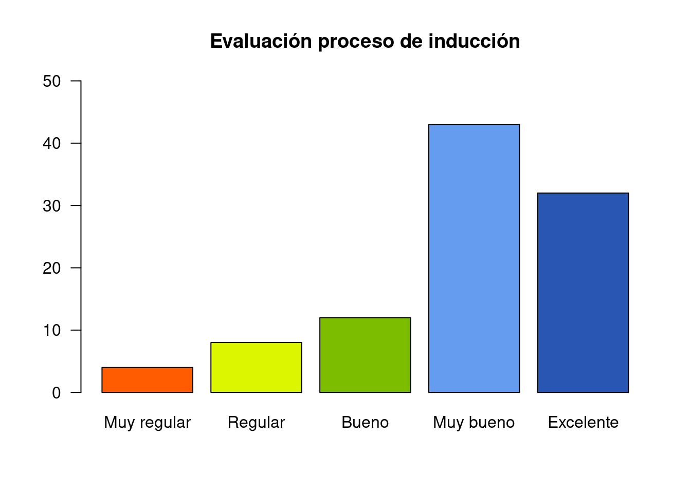
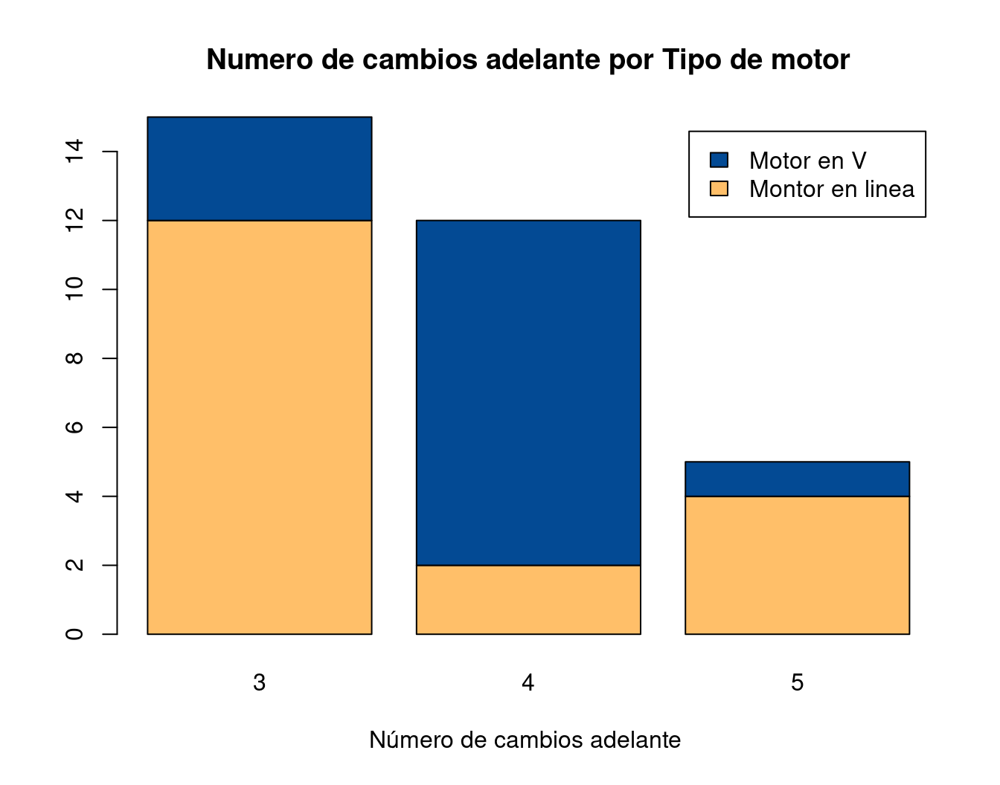
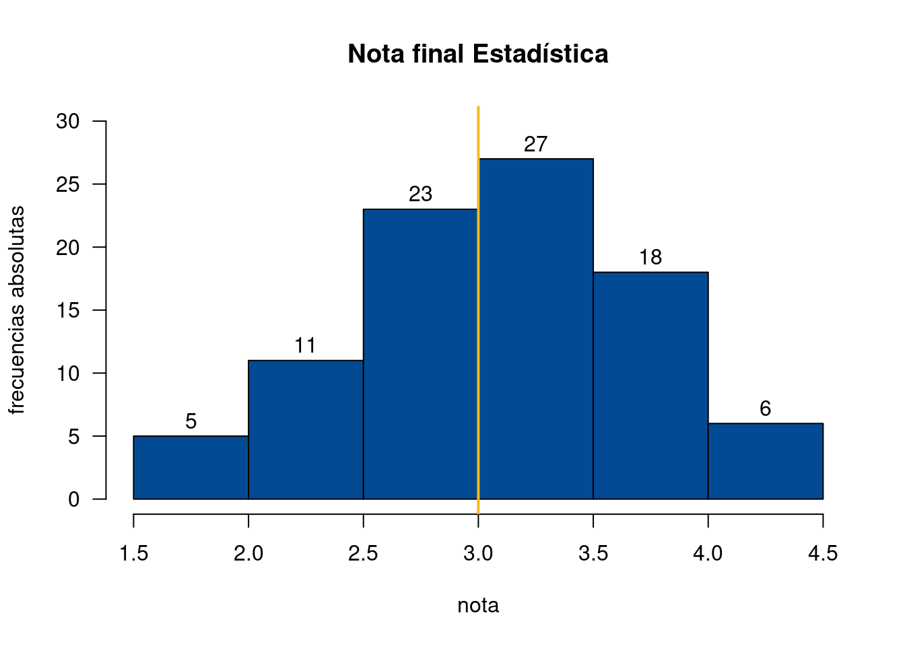
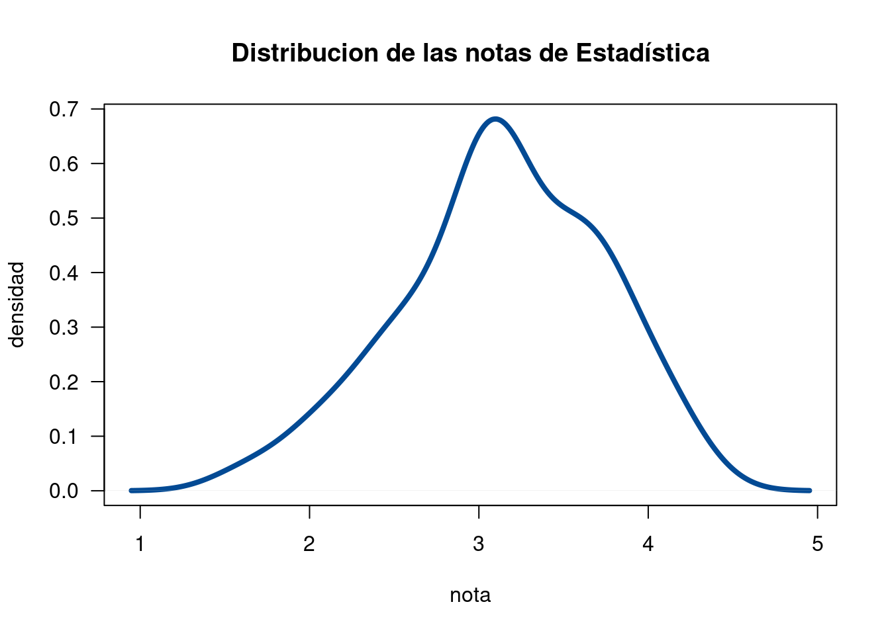
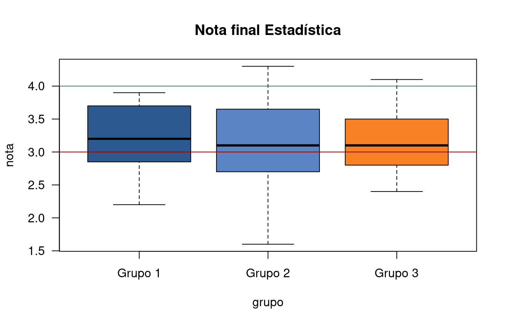
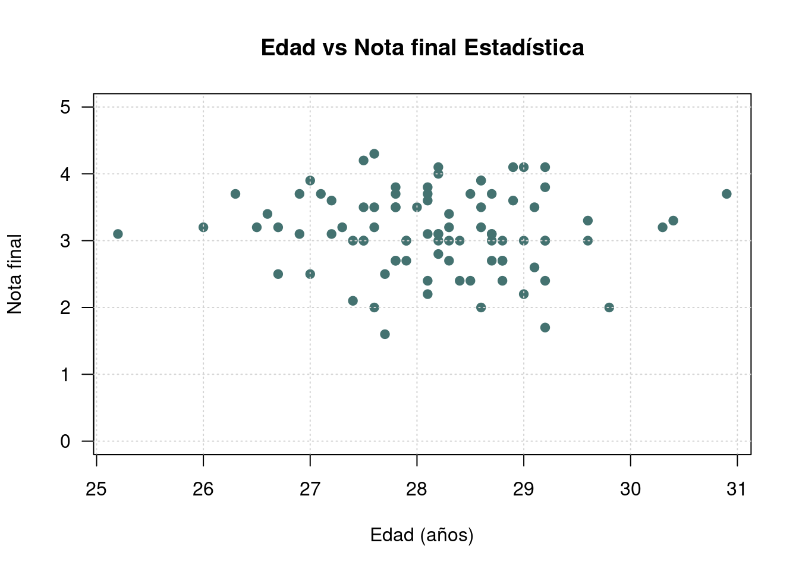
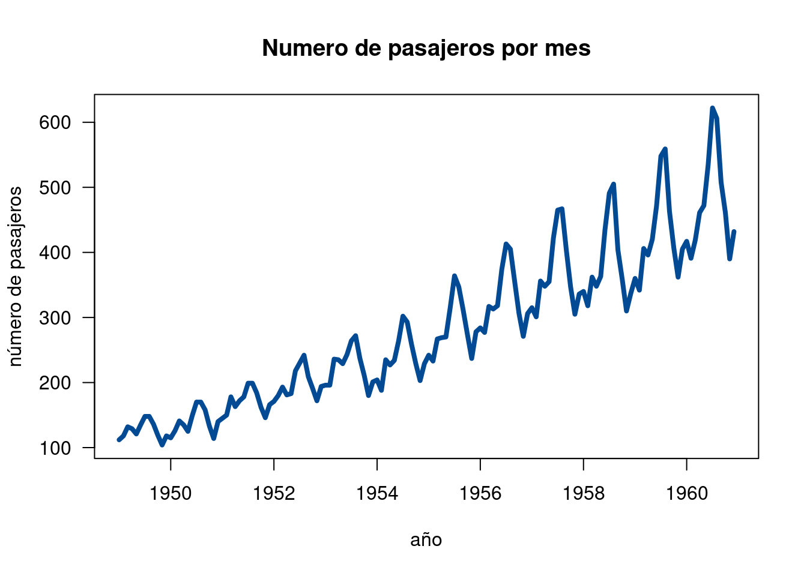

Se denomina gráfico a una representación visual de una serie de datos, prepresentación que tiene como finalidad dar una rápida noción acerca de volúmenes, cantidades y porcentajes, estableciendo comparaciones
Fuente : enciclopedia.net
Elegir el gráfico adecuado es muy importante, pues existen diferentes alternativas y se debe escoger el apropiado para representar los datos. El tipo de dato determina el tipo de gráfico así:
| Tipo de variable | Escala | Gráfico |
|---|---|---|
| Cualitativas | ||
| Nominal | Torta | |
| Ordinal | Barras | |
| Cuantitativas | Intervalo-razón | Diagrama de tallos y hojas |
| Histograma | ||
| Diagrama de cajas | ||
| Diagrama de densidad | ||
| Diagrama de puntos | ||
| Diagrama de lineas | ||
| Diagrama de radar | ||
| Gráfico likert | ||
| Mapa de calor |
Este tipo de gráficos se utiliza para variables cualitativas medidas en escala nominal.

El diagrama de barras se utiliza para representar variables cualitativas en escala ordinal. Es necesario que los valores representados sigan el orden de la escala.

Este diagrama se emplea para representar dos variables cualitativas que pueden ser de escala nominal u ordinal.

##
## The decimal point is at the |
##
## 1 | 67
## 2 | 00012244444
## 2 | 555677777778
## 3 | 0000000000000011111111222222223344
## 3 | 555555566677777777888999
## 4 | 0111123Este diagrama ordena los datos de manera que se puede determinar tanto el mínimo (1.6) como el máximo (4.3) , además de visualizar donde están la mayor concentración de ellos.
El histograma es uno de los gráficos más utilizados para representar variables cuantitativas y permite resumir por rangos los diferentes datos. Es una buena forma de visualizar la distribución de los datos y su forma.

Este diagrama corresponde a un contorno suavizado del histograma que permite visualizar claramente la forma de los datos.

Es uno de las representaciones gráficas más utilizadas, pues además de los elementos y características que permite visualizar de las variables, permite comparar los resultados de dos o más grupos.

Este diagrma de puntos permite visualizar la relación lineal que puede existir entre dos variables cualitativas.


# sumulación de datos x=rnorm(100,100,20) y=rnorm(100,100,25) z=rbinom(100,4,0.30) t=1:100 pie(table(z)) # gráfico de torta barplot(table(z)) # diagrama de barras stem(x) # diagrama de tallos y hojas hist(x) # histograma boxplot(x) # diagrama de cajas plot(x,y) # diagrama de dispersión plot(t,y, type="l") # linea de tiempo plot(density(x)) # diagrama de densidad